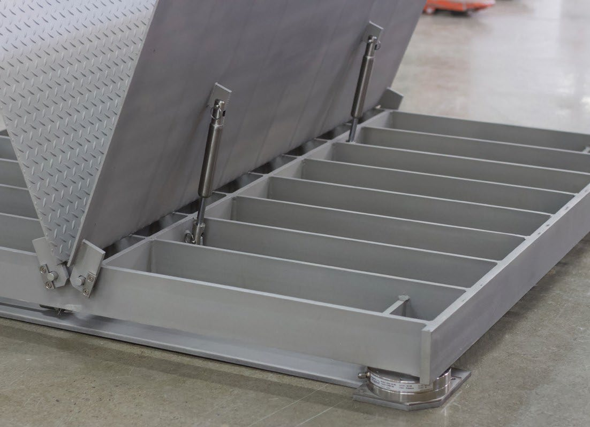
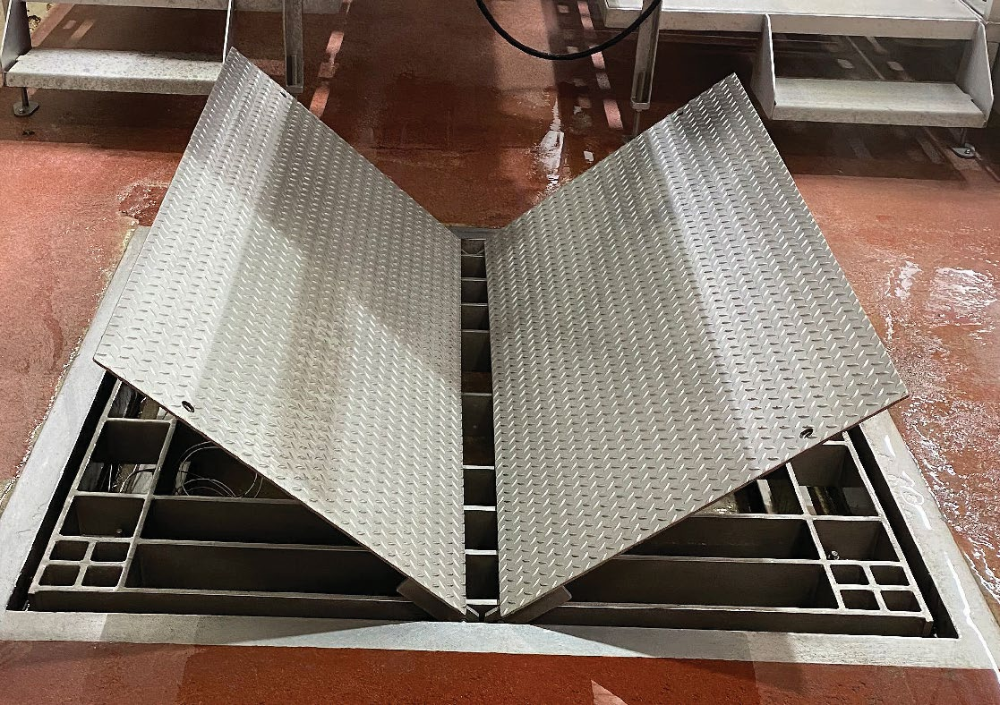
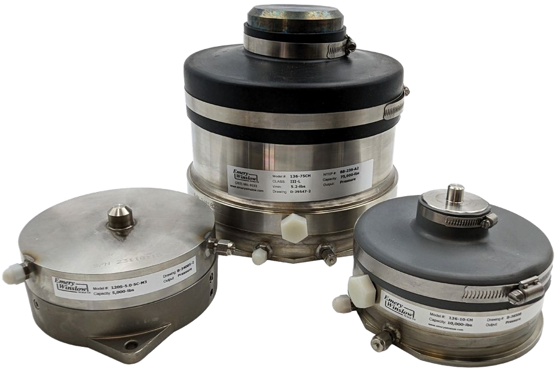

Emery Winslow · Câu chuyện ứng dụng
Nơi cân điện tử nhanh hỏng: tám hiện trường khắc nghiệt
Nhà máy thịt rửa mỗi đêm, hố cân bị ngập, mỏ đá bị sét đánh, loadcell ngập dưới nước. Đây là các ứng dụng thực tế do Emery Winslow Scale Company công bố, được HearS tóm tắt kèm đường dẫn tới từng nguồn.
- Rửa áp lực
- Ngập nước
- Sét đánh
- Bụi và xe tải nặng
Trao đổi về hiện trường khắc nghiệtTất cả giải pháp Emery Winslow

Vì sao những câu chuyện này quan trọng tại Việt Nam
Các nhà máy thủy sản, thịt và thực phẩm tại Việt Nam rửa thiết bị hằng ngày. Nhiều nơi có độ ẩm cao, mưa lớn và giông sét thường xuyên vào mùa mưa; mỏ đá, nhà máy xi măng và bãi thép nhiều bụi, xe tải nặng chạy suốt ngày đêm. Đây là những điều kiện dễ làm hỏng loadcell điện tử, và cũng là điều kiện được mô tả trong các câu chuyện dưới đây.
Mỗi câu chuyện dưới đây là bản tóm tắt câu chuyện ứng dụng (case study) đăng trên website của Emery Winslow. Tên khách hàng, trích dẫn và số liệu lấy từ các trang đó; HearS không tham gia các dự án này. Ảnh là ảnh sản phẩm của nhà sản xuất, không phải ảnh tại cơ sở của khách hàng.
Các ngành trong những câu chuyện này
Tám câu chuyện dưới đây, nhóm theo ngành theo thứ tự HearS ưu tiên cho thị trường Việt Nam.
Đường sắt
Cân toa xe và cân trục tại các điểm xuất hàng: cân ngoài trời chịu sét, bụi và xe tải nặng. Emery Winslow chưa công bố câu chuyện đường sắt nào — đây là mô tả ứng dụng, không phải khách hàng.
Năng lượng
Cân bồn và thiết bị chứa tại kho nhiên liệu và nhà máy điện, nơi điểm cân có thể nằm trong khu vực phân loại nguy hiểm. Emery Winslow chưa công bố câu chuyện năng lượng nào — đây là ứng dụng, không phải khách hàng.
Khai khoáng & mỏ đá
Florida Rock và Rogers Group (Redland Stone): cân xe tải ở mỏ đá bị sét đánh, điều chỉnh tải ngay khi xe đang trên cân.
SeaWorld & thủy sản
SeaWorld: loadcell thủy tĩnh ngâm hẳn dưới nước, cân cá voi và các loài sinh vật biển.
Thực phẩm
Plumrose, Boar’s Head và Morgan Foods: rửa áp lực mỗi đêm, hố cân ngập nước, và — trước khi chuyển đổi — gần như ngày nào cũng thay loadcell.
Hóa chất
Khu vực quy trình ăn mòn và nguy hiểm: cân bồn không điện tử tại thiết bị chứa. Emery Winslow chưa công bố câu chuyện hóa chất nào — đây là ứng dụng, không phải khách hàng.
Chế biến thịt · rửa áp lực cao mỗi đêm
Plumrose: cả một ca chỉ để rửa
Tại Plumrose, ca ba chỉ dành để rửa áp lực cao toàn bộ thiết bị. Trước khi chuyển sang cân thủy tĩnh, nước lọt vào thường làm hỏng loadcell điện tử, có thể làm dừng sản xuất hoặc tệ hơn là làm sai lượng nguyên liệu phối trộn.
“Khi cần thêm cân, cân thủy tĩnh chắc chắn sẽ là lựa chọn đầu tiên của tôi.” Dave Inman, Phó chủ tịch, Plumrose (theo trích dẫn của Emery Winslow, dịch từ tiếng Anh).
Nguồn: Emery Winslow Scale Company, câu chuyện ứng dụng Plumrose Food, đăng tháng 6/2024.
- Yếu tố khắc nghiệt: nước áp lực cao lên mọi chiếc cân, mỗi đêm
- Rủi ro: một loadcell hỏng có thể dừng dây chuyền hoặc làm sai công thức
- Giải pháp: loadcell thủy tĩnh, không có linh kiện điện tử
Thịt nguội · hố cân bị ngập
Boars Head: hố cân thường bị ngập
Boars Head dùng cân sàn âm nền mẫu 709 của Emery Winslow, lắp phẳng với mặt sàn, nhiều kích thước và tải trọng: một số cân dùng cho nhập và xuất hàng, số khác cân sơ bộ các xe thùng sản phẩm trước khi đổ vào máy trộn và máy xay. Nhiều nhà chế biến tránh dùng cân âm vì hố ngập làm hỏng loadcell điện tử. Các hố cân này thỉnh thoảng vẫn bị ngập, nhưng loadcell thủy tĩnh không bị ảnh hưởng.
“Phần giá cao hơn, chúng tôi đã thu lại nhiều lần nhờ giảm mạnh thời gian dừng máy, ít sửa chữa hơn và không phải thay loadcell.” (dịch từ tiếng Anh)
Nguồn: Emery Winslow Scale Company, câu chuyện ứng dụng Boars Head, đăng tháng 6/2024.
- Yếu tố khắc nghiệt: nước rửa và hố cân bị ngập
- Đã lắp: cân sàn âm nền mẫu 709
- Kết quả được nêu: ít dừng máy, ít sửa chữa, không thay loadcell

Chế biến thực phẩm · loadcell hỏng hằng ngày
Morgan Foods: gần như ngày nào cũng thay loadcell
Morgan Foods, một doanh nghiệp chế biến thực phẩm tư nhân lớn ở miền nam bang Indiana, nâng cấp thiết bị sản xuất hằng năm và cần loadcell hoạt động ổn định. Theo giám đốc kỹ thuật của công ty, khi còn dùng loadcell điện tử, việc thay loadcell “gần như ngày nào cũng có”. Cân thủy tĩnh không dùng điện tại điểm cân, nên những tác nhân thường làm hỏng loadcell điện tử không còn ảnh hưởng.
“Các loadcell thủy tĩnh này đã chứng minh là giải pháp đúng cho ứng dụng của chúng tôi.” Cory Lytle, Giám đốc Kỹ thuật, Morgan Foods (dịch từ tiếng Anh).
Nguồn: Emery Winslow Scale Company, câu chuyện ứng dụng Morgan Foods, đăng tháng 6/2024.
- Yếu tố khắc nghiệt: sản xuất thực phẩm ẩm ướt, rửa thường xuyên
- Trước đây: gần như ngày nào cũng thay loadcell điện tử
- Sau đó: loadcell thủy tĩnh

Đá xây dựng · sét đánh và lưu lượng xe lớn
Rogers Group và Redland Stone: sét đánh và 1.200 xe mỗi ngày
Tại Rogers Group ở miền nam Indiana, chiếc loadcell duy nhất trong các cân cũ phải thay ít nhất ba lần mỗi năm vì sét đánh. Sau khi chuyển sang cân thủy tĩnh, người quản lý mảng đá ước tính tiết kiệm khoảng 4.000 USD chi phí bảo trì mỗi năm cho mỗi cân.
Redland Stone Products ở San Antonio, Texas, dùng cân Emery Winslow từ năm 1985. Cơ sở sản xuất hơn năm triệu tấn đá dăm mỗi năm, với dây chuyền nghiền công suất 6.000 tấn mỗi giờ; ngày bận nhất có hơn 1.200 xe tải đi qua. “Cơ quan đo lường đến kiểm tra các cân này, và trong bảy năm tôi không thấy cần hiệu chỉnh lần nào.” (dịch từ tiếng Anh)
Nguồn: Emery Winslow Scale Company, câu chuyện ứng dụng Redland Stone Products & Rogers Group, đăng tháng 6/2024.
- Yếu tố khắc nghiệt: sét, bụi và xe tải nặng liên tục
- Trước đây: ít nhất ba lần thay loadcell mỗi năm do sét
- Kết quả được nêu: chi phí bảo trì thấp hơn, bảy năm không cần hiệu chỉnh

Kho silo ngũ cốc · sét, nước và chuột
The Andersons: cân xe tải 70 ft từ năm 1986
Giữa thập niên 1980, nhân viên The Andersons đến xem một cân thủy tĩnh Emery Winslow tại nhà máy chế biến cà chua của Campbell Soup ở Napoleon, Ohio. Năm 1986, công ty lắp một cân xe tải Emery Winslow dài 70 ft tại kho silo ngũ cốc ở Findlay, Ohio. Loadcell thủy tĩnh không dùng điện, và dưới bàn cân không có cáp điện để chuột cắn.
“Với cân thủy tĩnh, chúng tôi đã giảm đáng kể khối lượng bảo trì định kỳ.” “Chúng tôi hài lòng đến mức dùng cân thủy tĩnh ở mọi nơi khả thi.” David Myles, The Andersons Inc. (dịch từ tiếng Anh)
Nguồn: Emery Winslow Scale Company, câu chuyện ứng dụng The Andersons, đăng tháng 6/2024.
- Yếu tố khắc nghiệt: cân ngoài trời, sét, nước, chuột
- Đã lắp: cân xe tải 70 ft (khoảng 21 m), năm 1986
- Kết quả được nêu: giảm đáng kể bảo trì định kỳ

Công viên biển · loadcell ngập dưới nước
SeaWorld: cân cá voi với loadcell ngập nước
Kỹ sư Emery Winslow làm việc với quản lý huấn luyện động vật của SeaWorld để thiết kế bàn cân 9 × 15 ft (khoảng 2,7 × 4,6 m) với tải trọng kết cấu 40.000 lb (khoảng 18 tấn). Bàn cân thay thế cách cân thú biển bằng võng treo trên cẩu. Sau đó Emery Winslow cung cấp thêm cân cá voi cho SeaWorld, cùng cân cho hải mã và gấu Bắc Cực.
“Bản thân các loadcell ngập hoàn toàn dưới nước, chỉ có bàn cân ở trên mặt nước để giảm tác động của sóng.” (dịch từ tiếng Anh)
Nguồn: Emery Winslow Scale Company, câu chuyện ứng dụng Sea World, đăng tháng 6/2024.
- Yếu tố khắc nghiệt: loadcell ngập nước thường xuyên
- Đã làm: bàn cân 9 × 15 ft theo yêu cầu, tải kết cấu 40.000 lb
- Kết quả được nêu: không còn cân bằng cẩu và võng

Mỏ đá · chất tải đúng khối lượng
Florida Rock: điều chỉnh tải ngay khi xe đang trên cân
Florida Rock Industries, một nhà sản xuất đá dăm lớn, cần chất tải đúng khối lượng đặt hàng cho chuyến ngắn và chất sát tải trọng cho phép trên đường cho chuyến dài. Cân mới kết hợp thiết bị rót bù vật liệu (top-off) giúp người phụ trách trạm cân chỉnh tải ngay khi xe còn trên cân, thay vì phải rời cân để chỉnh rồi lên cân lần hai.
“Tôi có thể thêm hoặc bớt vật liệu chỉ trong vài giây.” Philip Sanders, phụ trách trạm cân (dịch từ tiếng Anh).
Nguồn: Emery Winslow Scale Company, câu chuyện ứng dụng Pit & Quarry, Florida Rock, đăng tháng 6/2024.
- Yêu cầu: mọi xe rời đi với đúng tải
- Đã lắp: cân xe tải mới kèm thiết bị rót bù vật liệu
- Kết quả được nêu: không phải lên cân lần hai

Hàng không · khối lượng và cân bằng
Sân bay El Dorado, Bogotá: cân máy bay tới Boeing 747
Năm 1999, Emery Winslow phát triển hệ thống mà hãng mô tả là hệ thống tự động kiểm tra khối lượng và cân bằng máy bay đầu tiên, phối hợp với Tổ chức Hàng không Dân dụng Quốc tế (ICAO). Hệ thống được lắp tại Sân bay quốc tế El Dorado ở Bogotá, Colombia, kiểm tra khối lượng và cân bằng của máy bay cỡ lớn tới Boeing 747.
Lợi ích theo nhà sản xuất: an toàn hơn, tiết kiệm nhiên liệu và chất tải hiệu quả hơn, giảm bảo trì, tiếng ồn và ô nhiễm.
Nguồn: Emery Winslow Scale Company, câu chuyện ứng dụng Boeing 747, đăng tháng 6/2024.
- Yêu cầu: kiểm tra khối lượng và cân bằng của máy bay chở khách cỡ lớn như Boeing 747
- Đã làm: hệ thống kiểm tra theo yêu cầu, năm 1999
- Cho thấy: năng lực thiết kế theo yêu cầu, vượt ra ngoài cân tiêu chuẩn

Tất cả câu chuyện ứng dụng: emerywinslow.com/case-studies, HearS đọc ngày 13/11/2026, kiểm tra lại ngày 15/11/2026. Trích dẫn giữ nguyên như Emery Winslow Scale Company công bố; bản tiếng Việt do HearS dịch.
Điều kiện bảo hành, giao hàng và các phê duyệt cần thiết khi sử dụng tại Việt Nam được xác nhận trong từng báo giá của HearS.
Hiện trường của Quý khách có khắc nghiệt như vậy?
Vui lòng cho chúng tôi biết điều gì đang làm hỏng cân của Quý khách. Chúng tôi sẽ phản hồi qua email với câu hỏi làm rõ hoặc đề xuất giải pháp.